Ferretería y hogar · Osorno
Para la casa y para la obra.
Herramientas, pinturas y hogar en Av. Juan Mackenna 1581.
- 285reseñas en Google
- 4,1de nota
- 2mundos en un local: la casa y la obra
- 0páginas propias: sólo sale en directorios
La pregunta de todos los sábados
¿Qué taladro necesito?
Depende de la pared, no del precio.
- Madera y muebles
Atornillador
Liviano, a batería, para armar y colgar.
- Ladrillo
Percutor
Golpea mientras gira; con broca para concreto.
- Hormigón
Rotomartillo
Para la obra y los hoyos grandes.
- Metal
Taladro con velocidad
Lento y firme, con broca de acero.
Qué conviene para cada caso lo aconseja el mesón.
En Osorno llueve, y la casa se arregla igual.
De la herramienta a la cocina
Los pasillos
-
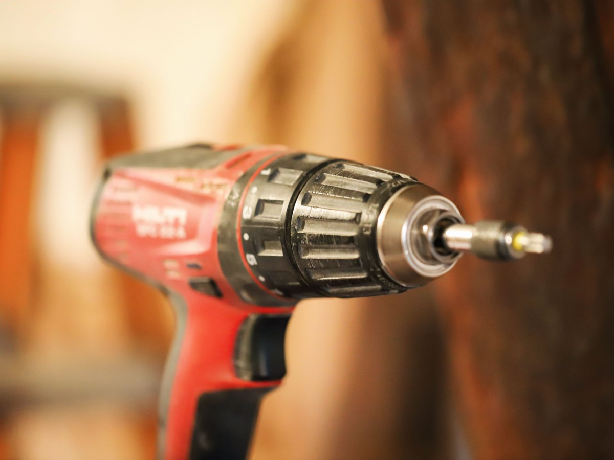
Eléctricas y de mano
Herramientas
Taladros, sierras y destornilladores.
-
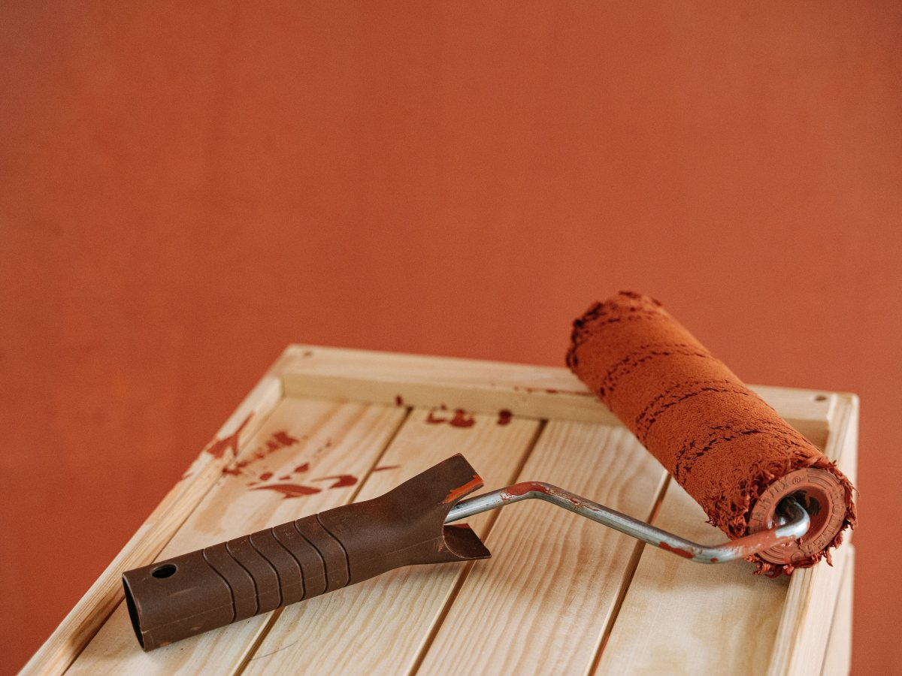
Paredes y rejas
Pinturas
Látex, esmaltes y rodillos.
-
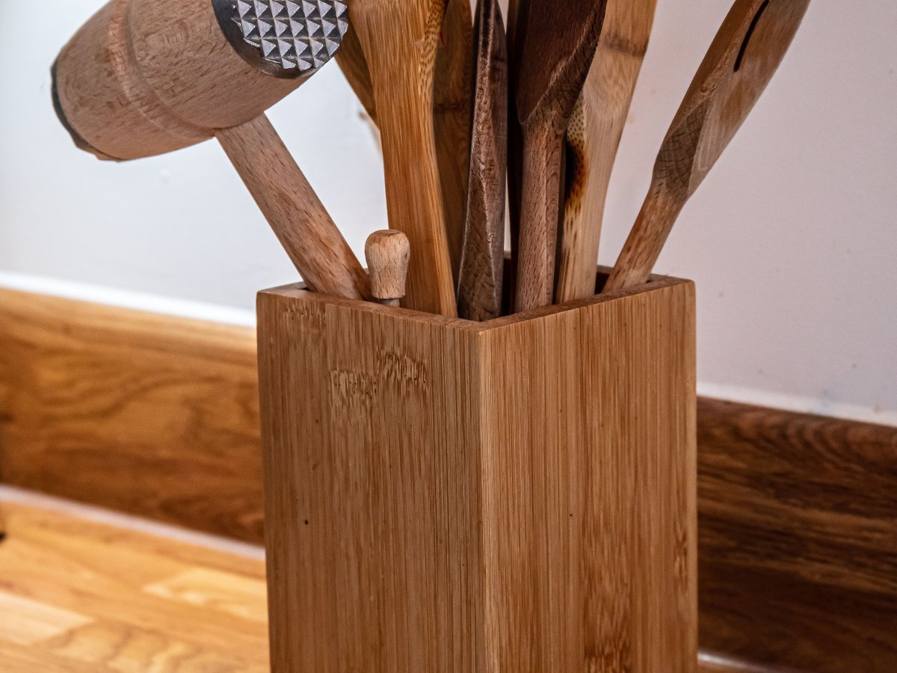
Para la casa
Cocina y hogar
Utensilios y lo de todos los días.
-
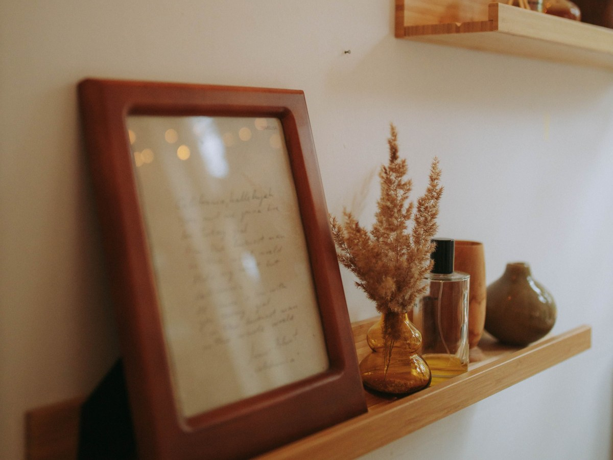
Para colgar
Repisas y fijaciones
Soportes, tarugos y tornillos.
-
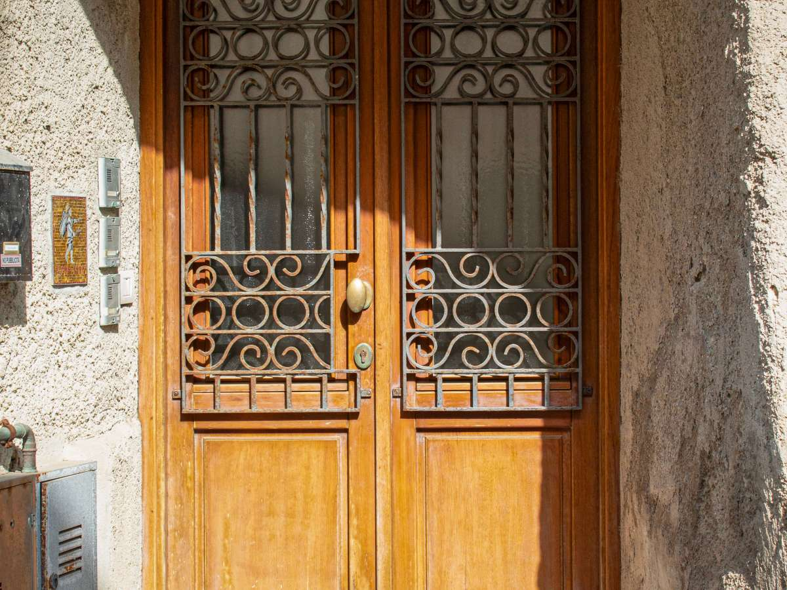
Para cerrar
Puertas y chapas
Bisagras, manillas y cerraduras.
-
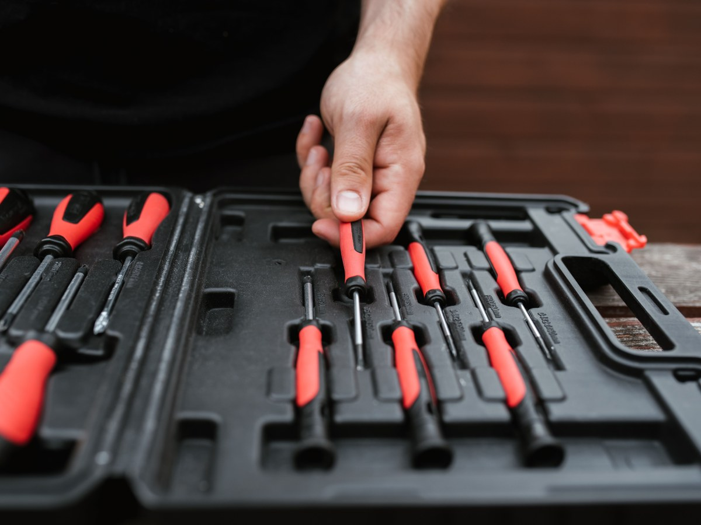
Juego completo
Destornilladores
Paleta, cruz y los raros.
Lo que hay de verdad lo confirma la ferretería.
285 reseñas en Osorno.
Y ninguna página donde ver qué hay
Del mesón a la casa
Lo que se lleva un sábado
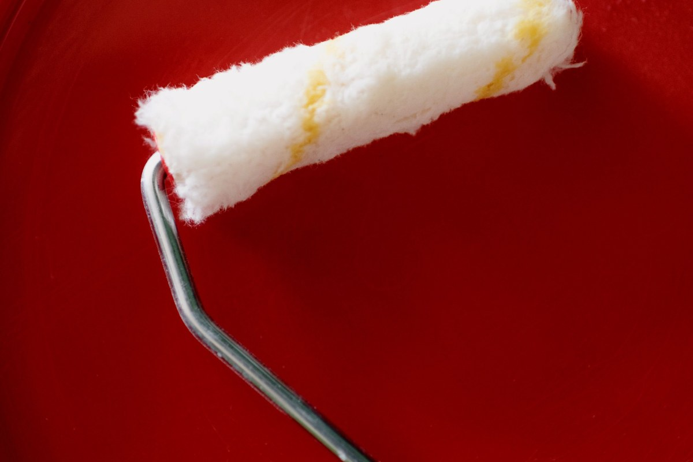
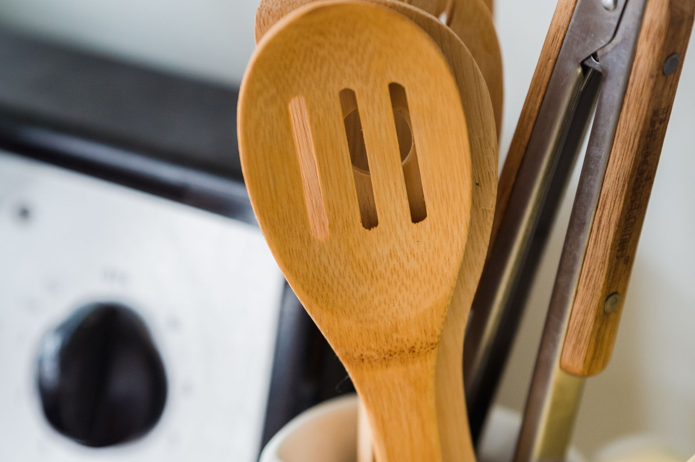
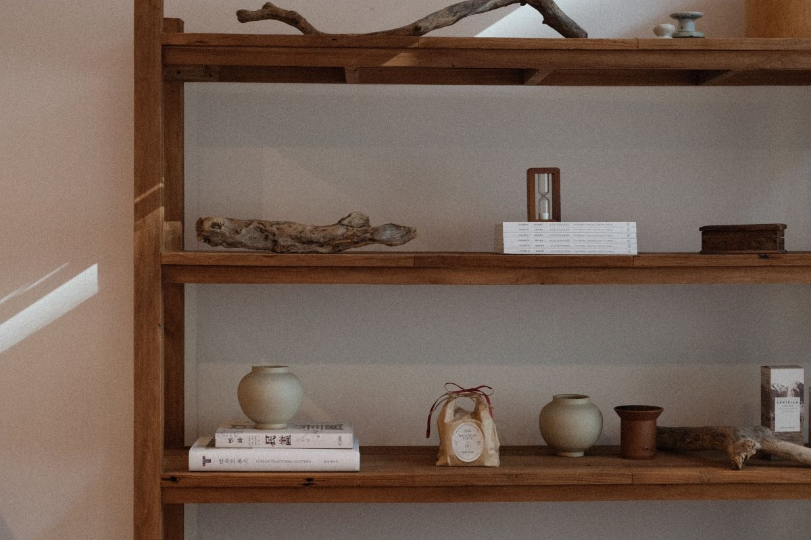
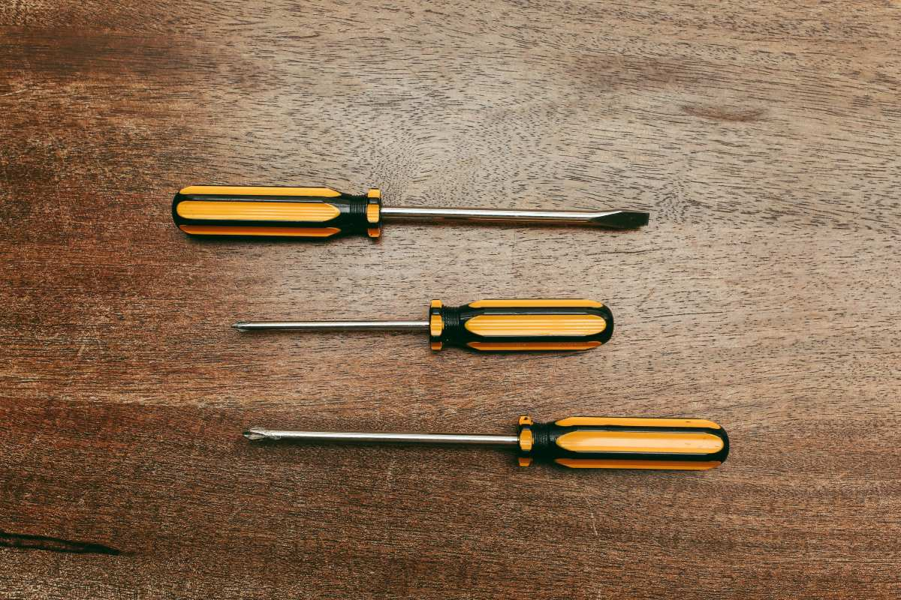
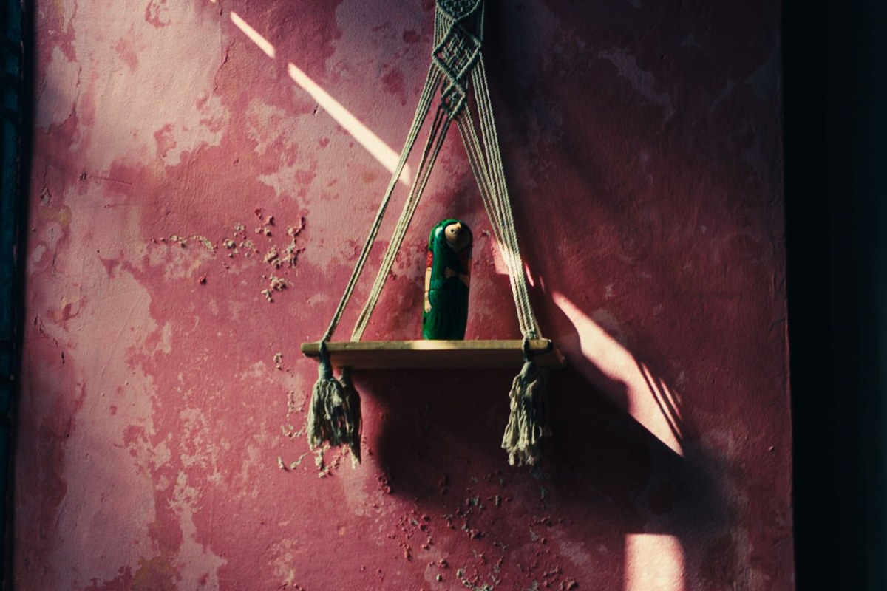
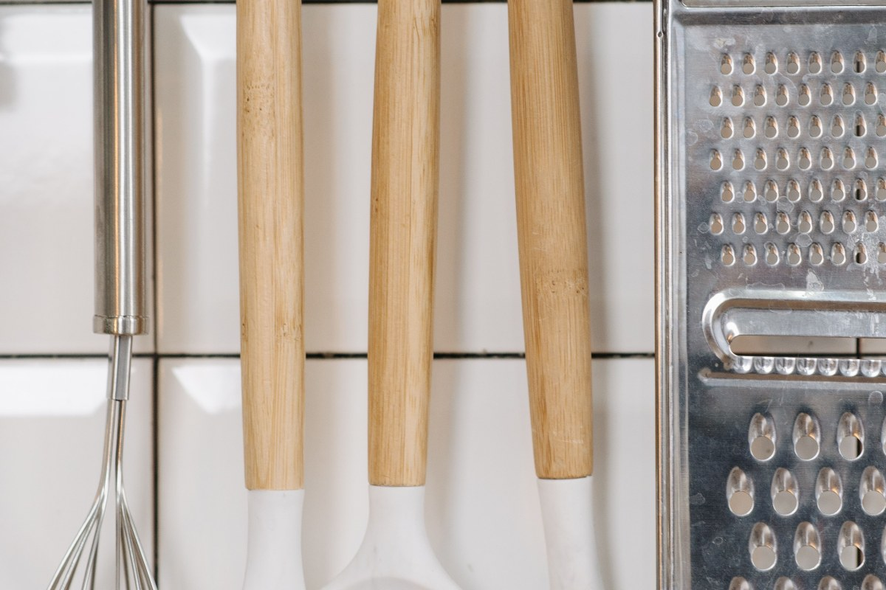
Fotos de referencia: el local de verdad lo muestra la ferretería.
Dónde estamos
Av. Juan Mackenna 1581, Osorno
- Dirección
- Av. Juan Mackenna 1581
- Teléfono
- 64 231 1180
- Reseñas
- 285 en Google, nota 4,1
- Horario
- Falta el horario
Antes de ir por algo específico, llame y pregunte si hay.
Av. Juan Mackenna 1581, Osorno Abrir en Google Maps
Para el dueño
Qué es real y qué falta
Lo verificado
El nombre, la dirección, el teléfono y las 285 reseñas con 4,1.
Lo de ejemplo
La guía de taladros y lo que hay en cada pasillo.
Lo que falta
El horario y fotos del local, del mesón y de los pasillos.